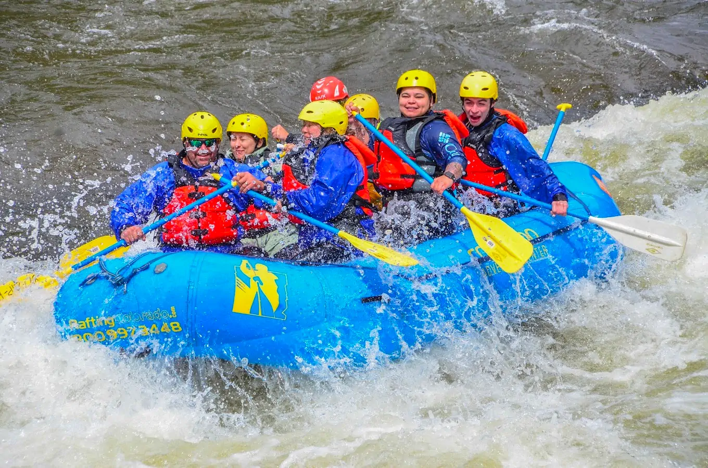

Rafting Heroes River Trips are the Best White Water Rafting in the world
Exciting Rafting Adventure on the Colorado River

Our trip begins in the city of Flagstaff, Arizona, where we meet our experienced guides and specialized equipment. After a brief briefing on rafting safety and techniques, we launched into the Colorado River in the Lee's Ferry area. During our 5-day adventure, we will navigate through stunning natural landscapes, including the Colorado Canyon, and pass through exciting rapids such as the famous "Crystal Rapid" and "Lava Falls." Every night, we will camp on the river bank to enjoy nature and the company of the group. On the last day, we will navigate through the impressive "Grand Canyon" and arrive at the Phantom Ranch area, where we will end our trip.
Sail the Arkansas River: An Exciting Journey
Enjoy an exciting rafting trip on the Arkansas River, Colorado, lasting 1-5 days and moderate-extreme difficulty level (class III-IV). Our trip begins in Buena Vista, where we meet experienced guides and specialized equipment. We will cruise through stunning natural landscapes, including the Arkansas River Canyon and Valley of the Moon, passing through exciting rapids such as "Numbers", "Narrows" and "Brown's Canyon". Every night, we will camp on the river bank. Includes hiking, wildlife viewing, overnight camping under the stars, safety equipment, and certified guides. Requirements: 14 years old, moderate physical condition and no previous experience necessary. Approximate price: $800-$1,200 per person, including equipment, guides, camping and meals. Best time: June to September for warm waters and April to May and September to October for cold waters.
San Juan River White Water Rafting: An Unforgettable Adventure
Enjoy an exciting rafting trip on the San Juan River, Colorado, lasting 1-4 days and moderate difficulty level (class II-III). It begins in Pagosa Springs, where we meet experienced guides and specialized equipment. We will navigate through impressive natural landscapes, including the San Juan River Canyon and the Pagos Valley, passing through exciting rapids such as "Pinball Rapid" and "Mansion Rapid". Includes hiking, wildlife viewing, overnight camping under the stars, safety equipment, and certified guides. Requirements: 12 years old, moderate physical condition and no previous experience necessary. Approximate price: $600-$1,000 per person, including equipment, guides, camp and meals. Best time: June to September for warm waters and April to May and September to October for cold waters.